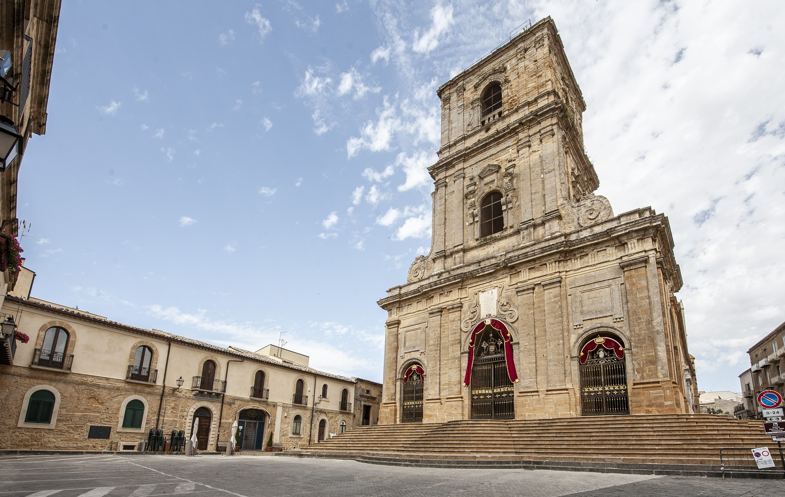
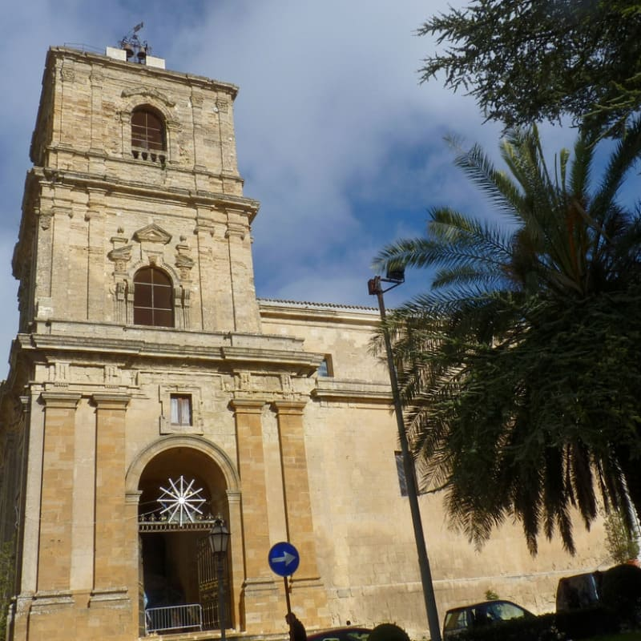

PIAZZA DUOMO
Piazza Duomo a Enna si trova nel cuore della città ed è dominata dalla storica Cattedrale di Enna. La piazza, ampia e luminosa, è circondata da edifici storici e locali che ne animano le vie, rendendola un luogo centrale per la vita urbana. È punto di incontro per cittadini e visitatori, luogo di celebrazioni religiose, eventi culturali e manifestazioni tradizionali, che riflettono la storia e le tradizioni della comunità ennese.
Piazza Duomo è il cuore della comunità di Enna, dove la vita sociale si intreccia con la storia religiosa e culturale della città. Qui si svolgono feste patronali, eventi culturali e momenti di aggregazione quotidiana, che rendono la piazza uno spazio vivo e partecipativo. La sua posizione dominante e la presenza di edifici storici conferiscono al luogo un forte senso di identità, facendo di Piazza Duomo un simbolo del legame tra passato e presente della città.
